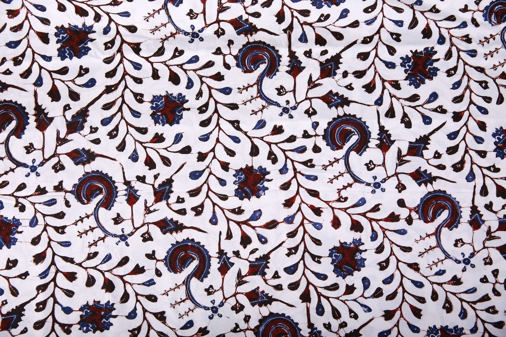

📜 Sejarah
Bahasa Osing digunakan oleh masyarakat Suku Osing, yaitu penduduk asli Banyuwangi. Bahasa ini berkembang sejak masa Kerajaan Blambangan dan menjadi bagian tak terpisahkan dari kehidupan sehari-hari masyarakat setempat.
Hingga sekarang, Bahasa Osing masih dipakai di beberapa wilayah Banyuwangi dan menjadi identitas budaya masyarakatnya. Bahasa ini juga menunjukkan hubungan dengan Bahasa Jawa kuno, tetapi berkembang dengan ciri khas sendiri yang membedakannya dari bahasa Jawa pada umumnya.
Bahasa Osing menjadi bukti hidup bahwa masyarakat Banyuwangi memiliki akar budaya yang kuat dan berbeda, meskipun berada di wilayah Jawa Timur. Keberadaannya menjadi salah satu kekayaan linguistik yang patut dilestarikan.
💭 Makna
Bahasa Osing bukan hanya alat komunikasi, tetapi juga identitas masyarakat Banyuwangi. Bahasa ini menunjukkan kebanggaan terhadap budaya lokal dan menjadi simbol bahwa budaya Osing masih hidup di tengah perkembangan zaman.
️ Identitas Budaya
Bahasa Osing menjadi penanda utama bahwa seseorang adalah bagian dari masyarakat asli Banyuwangi. Bahasa ini membedakan masyarakat Osing dari masyarakat Jawa pada umumnya.
💞 Kebanggaan Lokal
Penggunaan Bahasa Osing menunjukkan kebanggaan terhadap budaya lokal dan menjadi simbol bahwa budaya Osing masih hidup di tengah perkembangan zaman.
🔗 Penghubung Generasi
Bahasa ini menjadi jembatan yang menghubungkan generasi tua dengan generasi muda, menjaga agar nilai-nilai dan tradisi leluhur tetap hidup.
Penggunaan Sehari-hari
Bahasa Osing digunakan dalam berbagai konteks kehidupan masyarakat Banyuwangi:
1. Percakapan Sehari-hari
Bahasa Osing digunakan dalam percakapan sehari-hari di rumah, pasar, dan lingkungan masyarakat tertentu di Banyuwangi. Ini menjadi bahasa ibu bagi banyak keluarga Osing.
2. Kesenian Daerah
Bahasa ini juga muncul dalam kesenian daerah, lagu tradisional, dan pertunjukan budaya seperti Gandrung, Angklung Caruk, dan berbagai ritual adat.
3. Generasi Tua
Generasi tua masih aktif menggunakan Bahasa Osing dalam kehidupan sehari-hari, menjadi penjaga utama kelestarian bahasa ini.
4. Generasi Muda
Generasi muda mulai mengenal Bahasa Osing lewat sekolah dan media. Berbagai upaya pelestarian dilakukan agar bahasa ini tidak punah.
✨ Fakta Menarik
Kosakata Unik
Bahasa Osing punya kosakata yang berbeda dari Bahasa Jawa umum. Banyak kata yang tidak akan dipahami oleh penutur bahasa Jawa dari daerah lain.
Tidak Semua Orang Jawa Paham
Tidak semua orang Jawa Timur bisa memahami Bahasa Osing karena perbedaan kosakata dan struktur yang cukup signifikan.
Masih Aktif Digunakan
Bahasa ini masih aktif digunakan sampai sekarang, terutama di wilayah-wilayah yang menjadi pusat masyarakat Osing seperti Desa Kemiren.
Upaya Pelestarian
Ada upaya pelestarian lewat pendidikan dan kesenian. Bahasa Osing mulai diajarkan di sekolah-sekolah dan diintegrasikan dalam berbagai program budaya.
Kata Mirip, Arti Berbeda
Beberapa kata Osing terdengar mirip tapi artinya bisa berbeda dengan Bahasa Jawa. Ini menjadi salah satu keunikan yang menarik bagi para peneliti bahasa.
📸 Galeri
